Rocket Experiment Division
Mechanical and structural development of rockets, from CAD and FEM to carbon-fibre manufacturing, static tests and the European Rocketry Challenge.
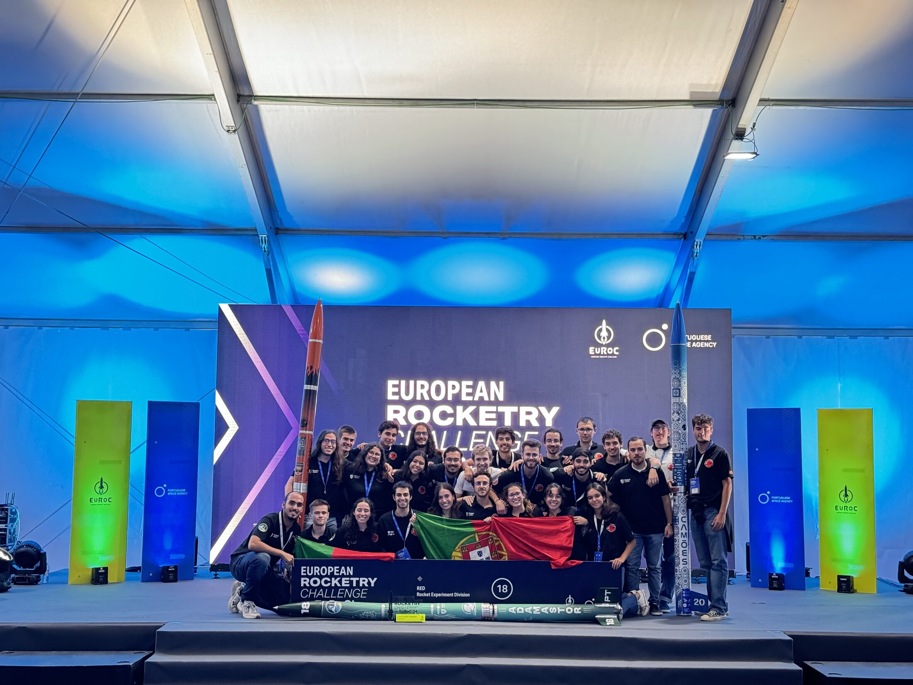
What I did
As a member of the Structures and Aerodynamics team I contributed to the mechanical and structural development of experimental rockets. My work covered CAD, structural analysis, manufacturing and testing, with a focus on developing and validating rocket components under different loading conditions.
Mechanical design
3D CAD components and detailed technical drawings, iterated against structural requirements and simulation results.
Structural analysis
FEM of components under compression, bending and buckling to evaluate performance and guide design decisions.
Manufacturing
Support for carbon-fibre manufacturing, dimensional inspection, assembly and integration of structural parts.
Testing
Static motor tests, launch-platform assembly and pre-launch preparation and verification.
Component design
Across my time in RED I developed component geometries in CAD, considering structural requirements and interfaces, and refining designs based on simulation results and manufacturing constraints.
Couplers & airbrakes
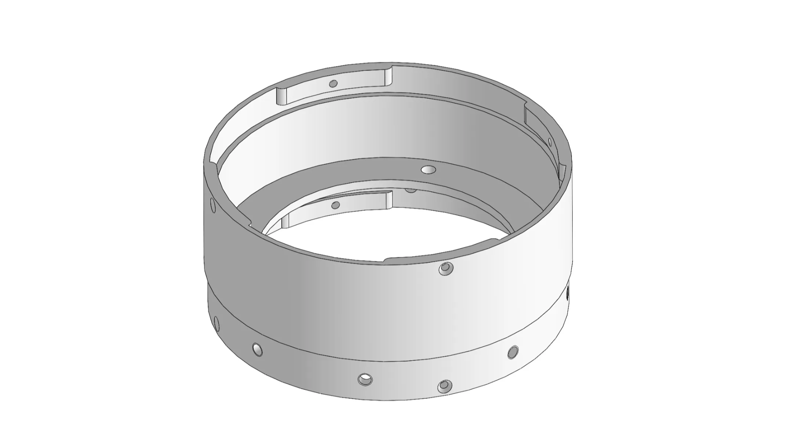
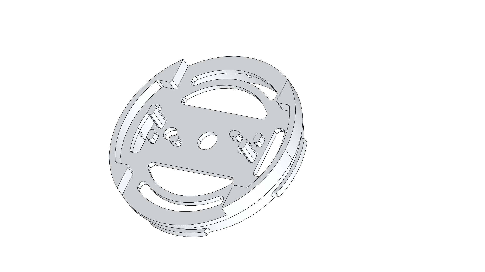
Nose cone
Developed through CAD covering geometry, structural interfaces and integration with the surrounding rocket structure, and refined to meet aerodynamic, structural and manufacturing requirements.
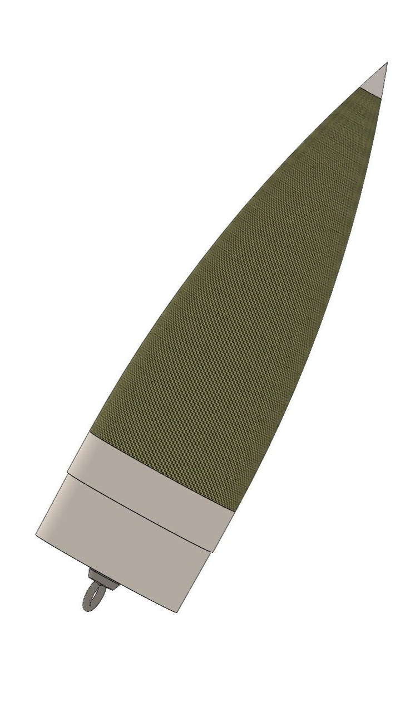
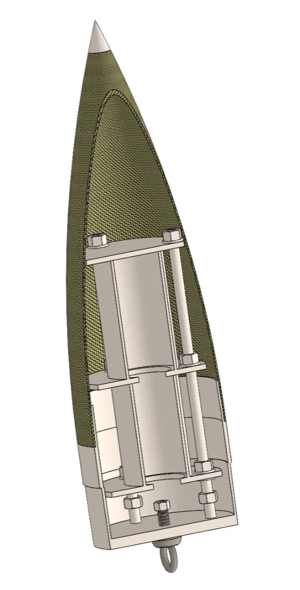
Skirt mould
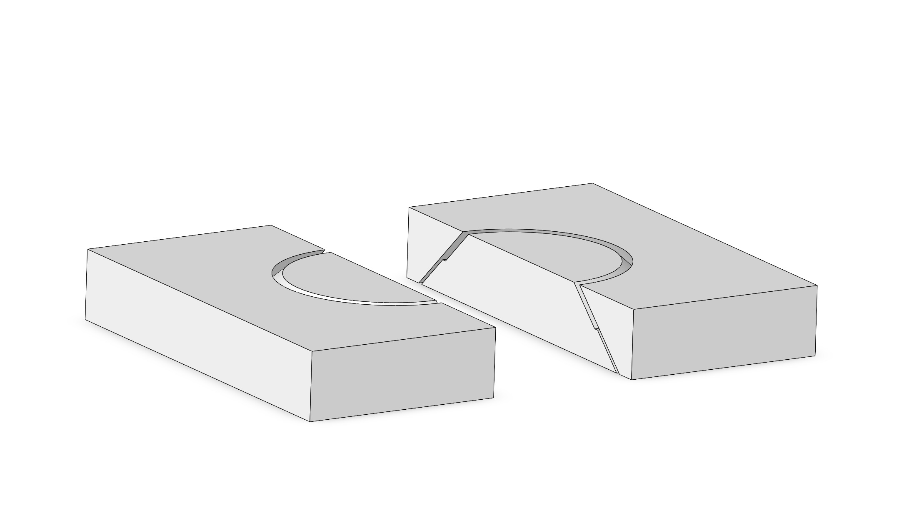
Avionics structure
Designed to house and support the electronic systems that monitor and control the rocket in flight, ensuring secure mounting, correct positioning and reliable integration.
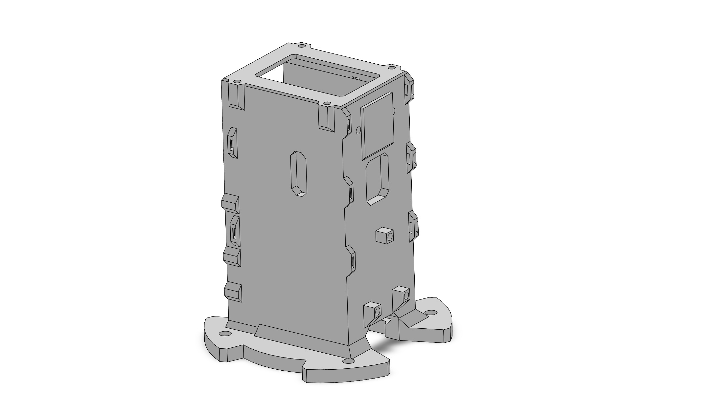
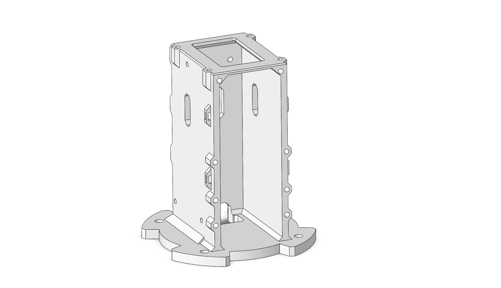
Infill port
During the transition from a solid motor to a hybrid configuration, a new access point was required above the motor section. I contributed to the design of the infill port, which lets the infill hose connect to the motor system while maintaining the structural requirements of the surrounding structure.
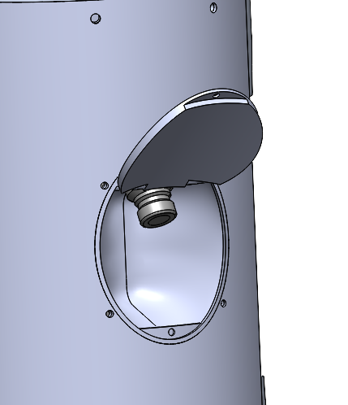
Technical drawings
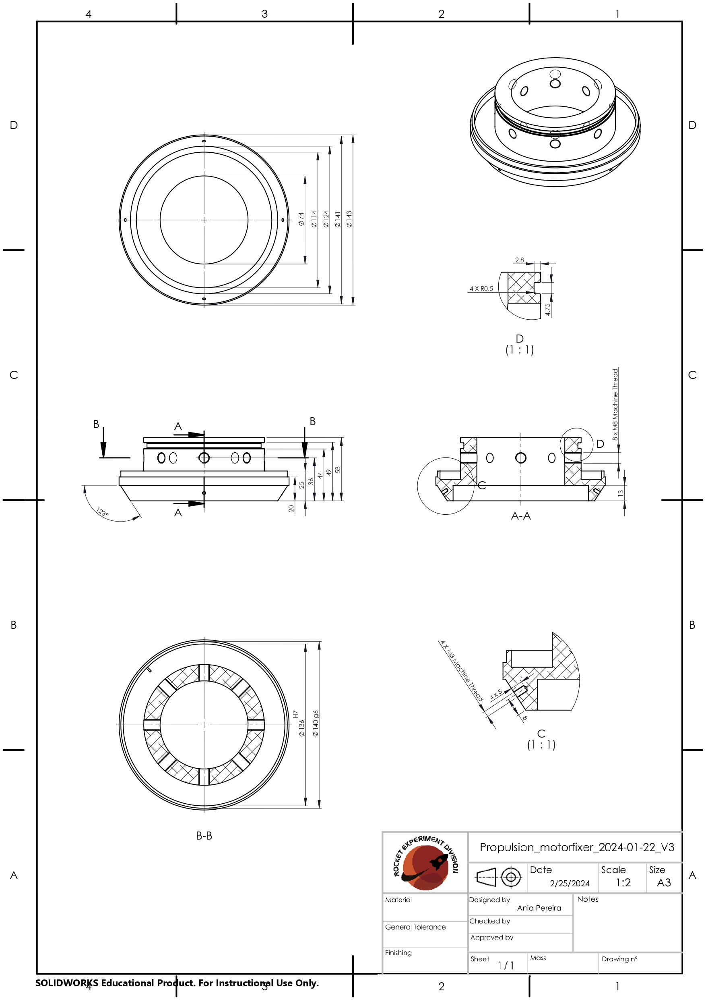
Structural analysis
FEM was an integral part of the design process, used to evaluate components under different loading conditions and to support decisions throughout development.
- CompressionAxial loading, with a focus on stress distribution and critical regions.
- BendingStructural behaviour under bending loads, identifying areas of increased stress and deformation.
- BucklingSlender components under compressive loading, to identify instability and critical buckling behaviour.
From simulation to design
The analyses were used not only to validate finished designs but also to guide iterations: simulation helped identify critical regions and where geometry or reinforcement could be improved.
Selected analyses
Rather than showing every simulation, these representative cases show different aspects of the work.
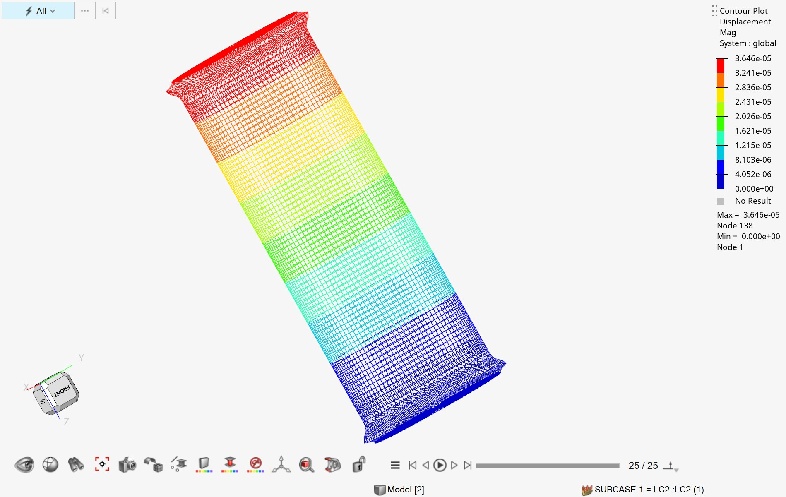
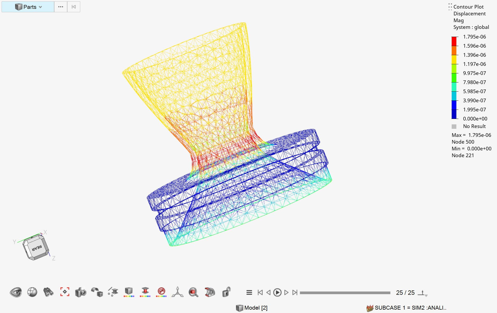
Manufacturing & design verification
Most components were manufactured externally, but I checked manufactured parts against their intended CAD geometry and supported their integration into the rocket: dimensional inspection, identifying discrepancies and verifying fit and interfaces.
I also gained hands-on experience manufacturing carbon-fibre rocket fins and a glass-fibre nose cone, which gave me a clearer understanding of how CAD design, manufacturing constraints, dimensional accuracy and final assembly are interconnected.
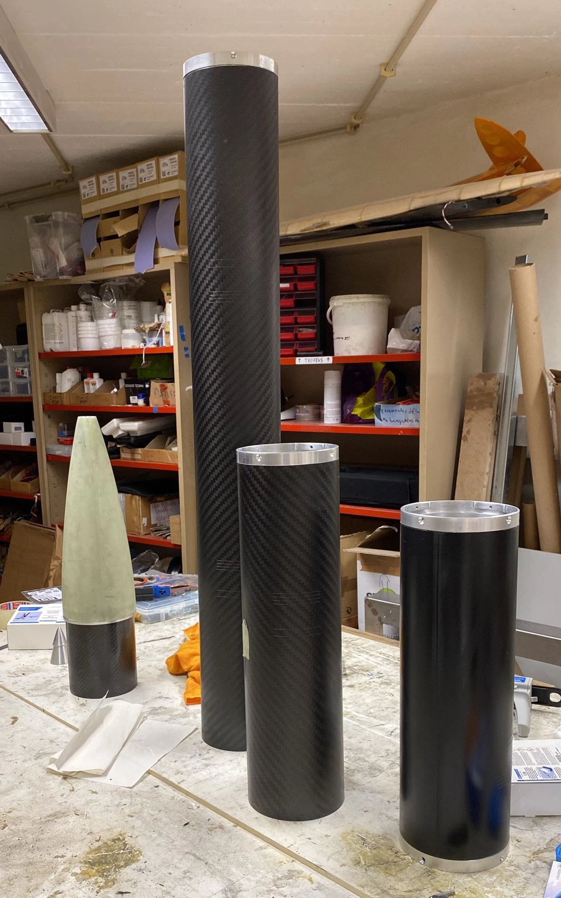
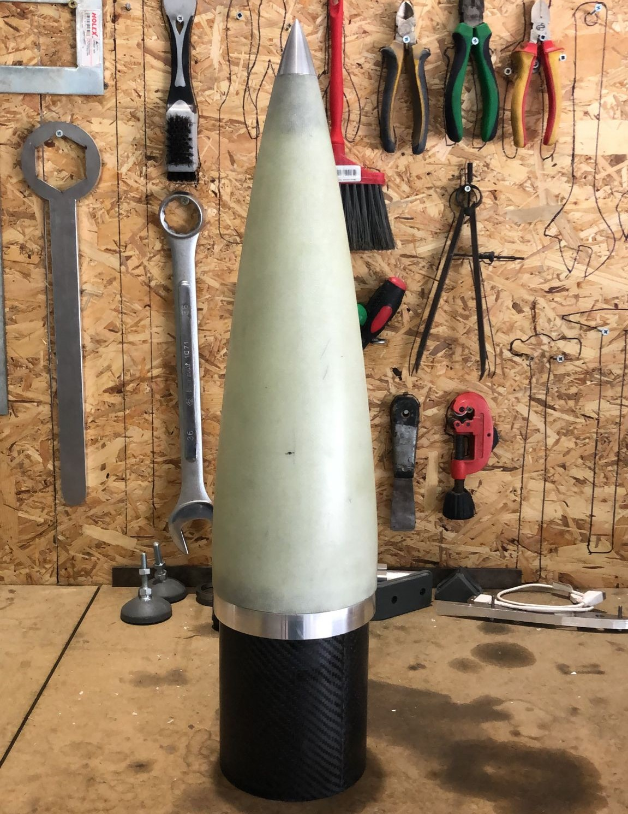
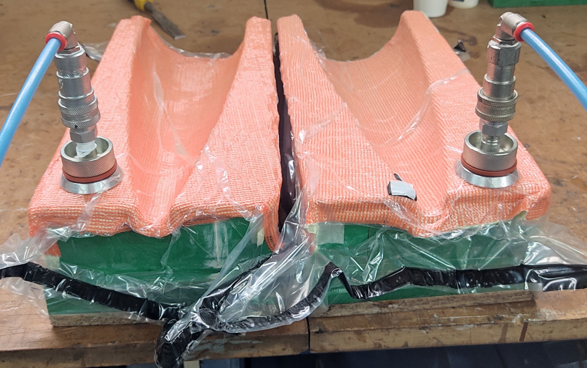
Testing & rocket integration
My involvement extended from design and analysis to the testing, assembly and integration of the complete rocket system.
Motor testing
Supported the preparation, setup and execution of motor tests under controlled conditions.
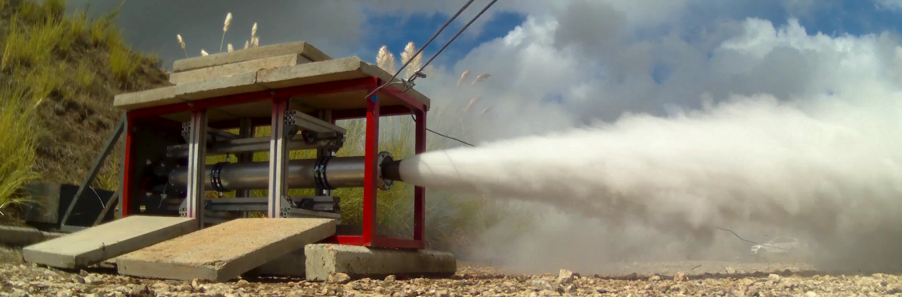
Static rocket tests
Participated in two static rocket tests, with the rocket secured to dedicated test infrastructure and the motor fired to evaluate its behaviour under controlled conditions.
Launch platform
Helped assemble and set up the launch platform, gaining experience with the interface between vehicle and ground support. Together these activities gave hands-on exposure to system integration, test procedures, safety requirements and the step from individual components to a complete operational system.
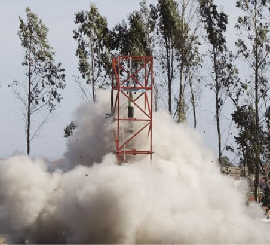
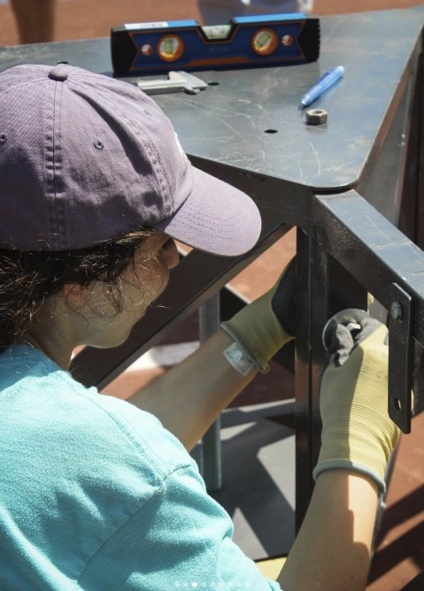
European Rocketry Challenge 2024
RED took the team's design, manufacturing, testing and integration work into a real flight environment at EuRoC 2024, finishing 4th overall and receiving the S3 Flight Award for its performance in the flight phase.
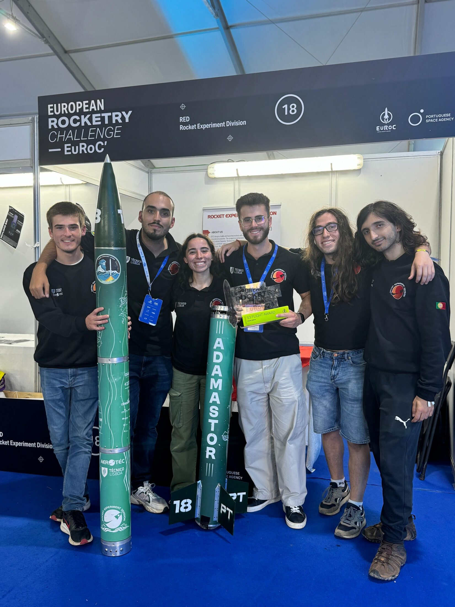
4th place overall · S3 Flight Award.